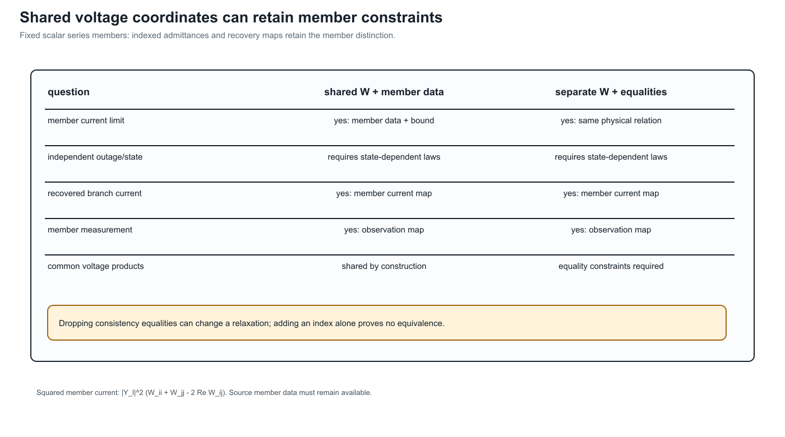

BIM/BFM parallel lines: an expressiveness audit
Page status: literature-informed formulation case; the equations illustrate scope boundaries and are not a new executable certificate.
The notes by Geth and Liu provide a compact warning about expressive notation. They study BIM and BFM second-order-cone formulations for parallel lines and $\Pi$-sections with ideal transformers and shunts [20]. The case belongs in this book because it is not only about convex relaxation: it shows how a missing branch index changes what a proof can state.

This is a notation-capability plate, not a new numerical certificate. It makes the scope boundary visible before the equations are interpreted as a theorem.
The branch identity is part of the variable signature
Consider two parallel branches $\ell i j$ and $k i j$. Their impedances are $Z_\ell$ and $Z_k$ and their series flows are $S_{\ell i j}$ and $S_{k i j}$. A BIM representation can use one bus-pair cross-product $W_{ij}=U_iU_j^*$ and write
\[S_{\ell i j}=Y_\ell^*(W_i-W_{ij}), \qquad S_{k i j}=Y_k^*(W_i-W_{ij}).\]
The shared $W_{ij}$ expresses that both members see the same endpoint voltage product. In a BFM representation, each branch may instead retain its own lifted current $L_\ell$ and $L_k$. The two variable spaces have different coordinates and different relaxation geometry. They are not equivalent merely because both are described as “the branch-flow model for the same network.”
For parallel members, the missing consistency relation can be written as
\[Z_\ell^*S_{\ell i j}=Z_k^*S_{k i j}.\]
Without it, independently chosen branch flows can satisfy the balance equations while failing to arise from one common voltage drop. Adding the relation is a formulation repair, not a graph transformation.
A theorem whose signature contains only $W_{ij}$ cannot quantify over member-specific current limits, outages, measurements or recovered branch currents. A theorem using $W_{\ell ij}$ can name those quantities, but it has changed the relaxation and must state that change explicitly.
Terminal power is not series power
For a nominal-$\Pi$ member, distinguish the series current from the current seen at each terminal:
\[I^{\mathrm{tot}}_{\ell i j} =\frac{I^s_{\ell i j}+I^{\mathrm{sh}}_{\ell i j}}{T_{\ell i j}^*}, \qquad I^{\mathrm{tot}}_{\ell j i} =I^s_{\ell j i}+I^{\mathrm{sh}}_{\ell j i}.\]
Consequently,
\[S^{\mathrm{tot}}_{\ell i j}=U_i(I^{\mathrm{tot}}_{\ell i j})^*, \qquad S^s_{\ell i j}=\frac{U_i}{T_{\ell i j}}(I^s_{\ell i j})^*.\]
An apparent-power limit placed at the terminal therefore constrains the total current, including shunt current and the ideal-transformer scaling. A limit on the series impedance current is a different observation. In a lossy branch, there is no single conserved scalar called “the flow on the edge.”
Implied current limits and relaxations
If a terminal apparent-power limit is $|S^{\mathrm{tot}}|\le S^{\max}$ and $|U_i|\ge U_i^{\min}$, then
\[|I^{\mathrm{tot}}_{\ell i j}| \le \frac{S^{\max}}{U_i^{\min}}.\]
This is a valid implied current bound. In the exact AC model it cannot tighten the feasible set beyond the original apparent-power limit, but in a relaxation it can bind first and strengthen the relaxation. The distinction is important: an implied constraint is not a new nameplate rating, and a relaxation proof is not automatically a physical-network proof.
Four common overclaims
| Tempting statement | What is actually established |
|---|---|
| “BIM and BFM are equivalent for this parallel network.” | Only after the variable correspondence and parallel-consistency constraints are stated; otherwise the relaxations may be incomparable. |
| “The branch has a current limit.” | Which current: series, sending terminal, receiving terminal, conductor total, or a recovered winding current? |
| “We can use one edge for the two lines.” | The aggregate terminal relation may be preserved, but member identity and member limits require a recovery map or a certified projection. |
| “The proof covers the power-flow model.” | It may cover only a fixed-parameter SOC relaxation, a selected projection, or a numerical test family. |
The paper’s two-bus examples make these differences visible without a large network. They complement the book’s multiconductor parallel cases: the latter focus on terminal-current recovery and feasible-set preservation, while this case focuses on variable signatures, $\Pi$-section bound semantics and the boundary between physical and relaxation-level equivalence.
House notation for the book
The book will use the BMOPFTools-style convention consistently:
- $\ell i j$ is a stored oriented arc, not a claim about operating power flow;
- $\ell$ identifies the physical/model member;
- symmetric intrinsic parameters such as $Z_\ell$ carry only the member index;
- directional quantities such as $I_{\ell i j}$ and $S_{\ell i j}$ carry the full arc triple;
- total-terminal and series quantities receive distinct superscripts;
- a shared bus-pair quantity such as $W_{ij}$ is used only when the theorem declares the sharing relation explicitly.
This is an expressive-notational rule: the symbols needed to state a constraint must remain visible in the theorem's variable signature.